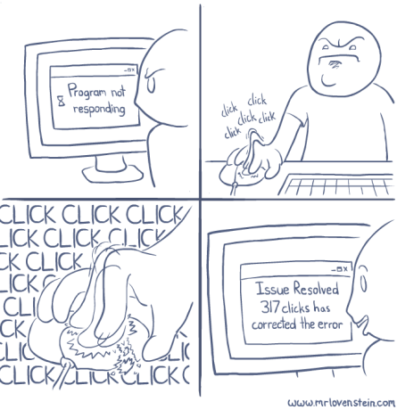

Home
Sass
GSAP
Gulp
Playground

Nu is het jullie beurt!
Gebruik dit document om de opdrachten uit te voeren
Mocht je hulp nodig hebben roep dan een van de presentatoren
Laat je werk zien als een opdracht af is
Als je snel klaar bent kan je een uitgebreidere opdracht krijgen
Waar je het project kan vinden
https://github.com/NKimenai/csp-presentation
Project opstarten
Clone het project van git
Doe eenmaal in het project
npm install
of
yarn
Run gulp dev
Voor GSAP kan je in
assets/js/playground.js
werken